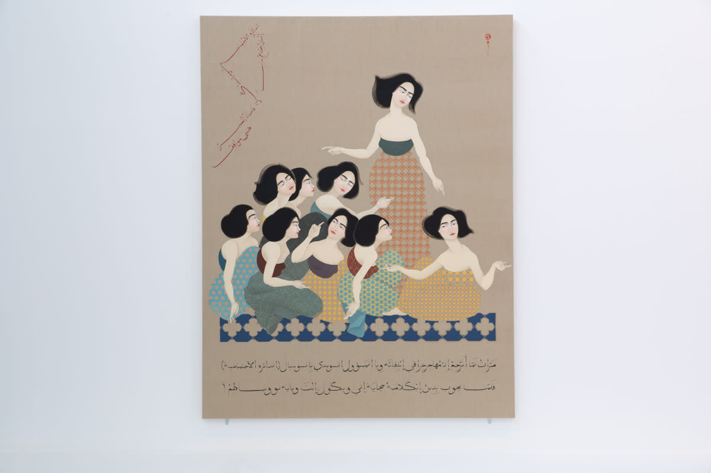
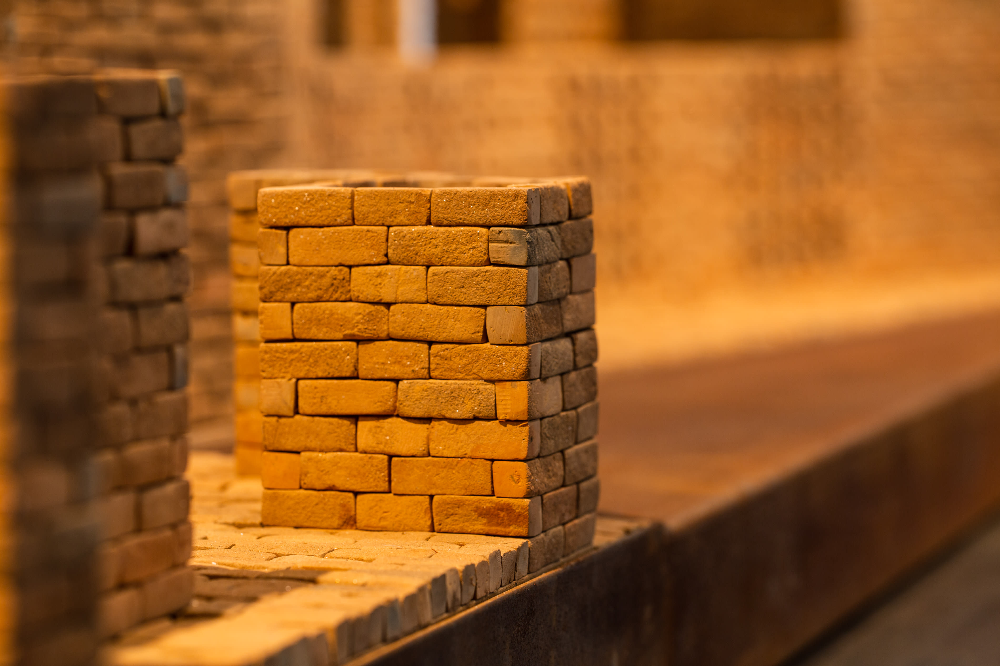
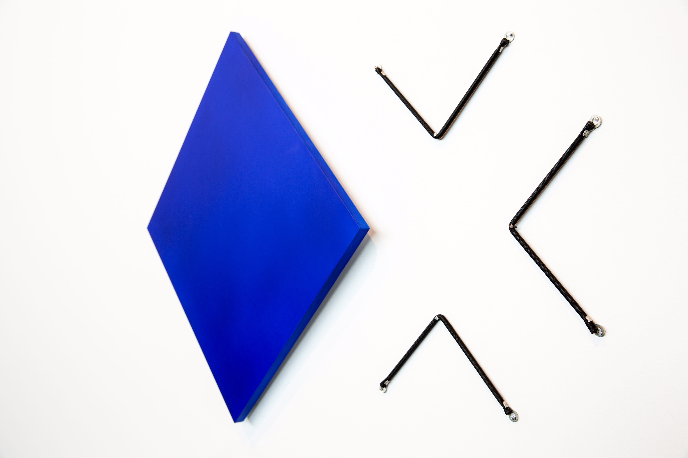
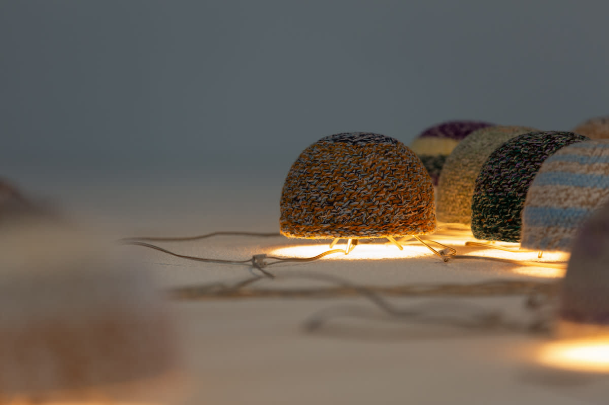
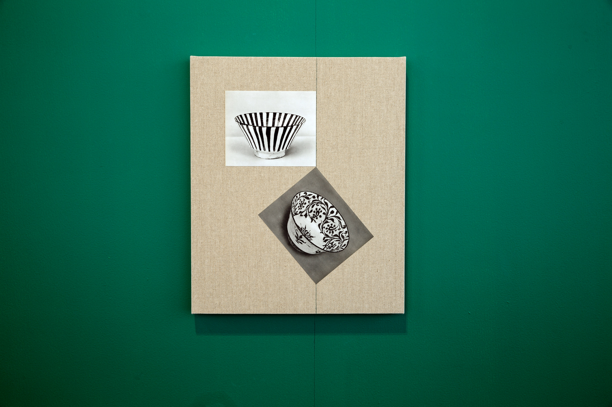
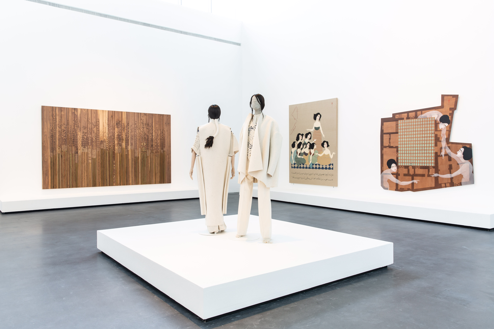

A group of porcelain-skinned bare-armed women with jet black hair, each donning an intricately patterned dress, sit in unison. One stands erect, as if leading the group, while the others are gathered together on the floor. Each points one of their elegantly depicted fingers in the air in various directions, as if in search of something—or, perhaps, of answers.
These are the women of Iraqi-Swedish artist Hayv Kahraman, one of the shortlisted winners of the Jameel Prize 5. The work is displayed in a spacious room on the second floor of the Jameel Arts Centre in Dubai, in an exhibition that spans the centre’s five galleries, and showcases the winning and shortlisted works of the 10-year-old biannual prize—revealing the mission of the Jameel Prize to present the continuous aesthetic and intellectual intersections between traditional Islamic designs and concepts and their contemporary counterparts.

Installation view of Jameel Prize 5, Hayv Kahraman at Jameel
Arts Centre, Dubai. Courtesy of Art Jameel. Photography by Dani Baptista
Kahraman’s work, The Translator, is part of the series How Iraqi are you? (2015). Beneath the group of women are a few lines of Arabic text that read: "When I used to translate between the head of Swedish social workers and Iraqi refugees, one of the refugees would interject at times, and say, 'which side are you on, ours or theirs?'" The artist refers to the in-between role of a translator: whose side is he or she on when translating for another culture? Ultimately, she seems to say, the translator lies within us.
This message is pertinent to a prize like Jameel’s. Established in 2009 after the renovation of the V&A’s Jameel Gallery of Islamic Art in London, the prize is awarded every two years to artists whose works are in dialogue with contemporary global artistic discourses, while at the same time passionately rooted in the traditions of their own cultural heritage. Previous winners of the prize, which is awarded in partnership with Art Jameel, include Turkish fashion label Dice Kayek, Algerian sculptor Rachid Koraïchi, Pakistani artist Ghulam Mohammad, and Iran-born artist Afruz Amighi.
First debuting at the V&A in London in June 2018, Jameel Prize 5 at Jameel Arts Centre marks the first time the winners and shortlisted artists’ works are exhibited in Dubai. “The first couple of years, the prize’s exhibition tended to go to places that were a bit more obvious, it has shown at Sharjah Museum before, the Casa Arabe in Madrid—places that you could sort of think of being the more obvious places for the prize to go to,” says Antonia Carver, Director of Jameel Arts Centre. “Over the last couple of editions, the V&A has really tried to push it to places that don’t normally see this kind of work. Jameel Prize 4, for example, went to Gwangju, South Korea and Almaty, Kazakhstan, bringing it to places that are familiar with Islamic art but haven’t had the chance to see this kind of work.”
The exhibition in Dubai, like the Centre’s own vision, provides a message not unlike that of Kahraman’s painting: a chance to offer a different audience new ways of viewing artworks that straddle various cultures. It is up to the viewer, therefore, to “translate” and understand what lies before them. “This is the first time the exhibition has come to Dubai, has had this amount of space - and also, this amount of public programming,” adds Carver. “We really tried to build on the creative processes behind the work, the ways in which artists are delving into the traditions of Islamic design and visual culture in ways that are very material and visceral, as well as the more conceptual side.”
The Jameel Prize 5 marked the first time that the £25,000 prize was awarded to two finalists: the Iraqi artist Mehdi Moutashar and Bangladeshi architect Marina Tabassum. On the second floor of the Jameel Arts Centre, a model of Tabassum’s Bait ur Rouf mosque, with its emphasis on natural light and ventilation and its open courts on four sides, presents the architect’s aim to create a space that enhances a sense of equality among visitors. “I wanted the building to offer this sense of spirituality, to allow you to connect with whatever you want to connect with, connect with God, connect with nature or with yourself,” says Tabassum. She intended the mosque to serve as not just a religious space, but also a social one, where inhabitants of the densely populated Uttara suburb of Dhaka where it is located can congregate. Funded by the local community, the project presents a contemporary
response to the domed brick mosques built in Bengal during the Sultanate period of the 14-16th centuries.

Installation view of Jameel Prize 5, Marina Tabassum at
Jameel Arts Centre, Dubai.
Moutashar’s winning bold works of minimalist abstraction are rooted in the tradition of Islamic geometry. Born in Iraq, the artist has lived and worked in France since the 1960s. His mesmerising works weave elements from Post-War Western abstraction into forms that mirror those of traditional Islamic geometry. The four works offer a chance to pause and contemplate the elegant simplicity of line and form.

Installation view of Jameel Prize 5, Mehdi Moutashar at
Jameel Arts Centre, Dubai.
The six other shortlisted artists and designers include Kamrooz Aram, Hayv Kahraman, Hala Kaiksow, Naqsh Collective, Younes Rahmoun, and Wardha Shabbir. Their works are spread out amidst five rooms at the Jameel Arts Centre, fostering a dialogue with one another through various artistic genres, contemporary art, and Islamic heritage.
Moroccan artist Younes Rahmoun’s charming Hat-light installation greets the visitor as they enter the exhibition. Seventy-seven knitted hats, called taqiyyas, are positioned on the ground, each illuminated with a light from within. Worn by Moroccan men of modest means, the hats often signal them as observant Muslims. The hats are connected to electric wires, all linked to one cable, representing the idea of one faith. Rahmoun’s work incorporates geometry, pattern and numbers from Islamic tradition. He prefers to use odd numbers that cannot be divided evenly in order to give way to the idea of infinity and endless time. The work is oriented towards Mecca, as if the hats are praying, just as their Muslim wearers would.

Installation view of Jameel Prize 5, Younes Rahmoun at
Jameel Arts Centre, Dubai.
Around the corner are the modernist pieces of Iranian-American artist Kamrooz Aram. At once pleasing to the eye and intellectually rich, Aram’s works aim to challenge conventional Western views of Islamic art as merely decorative. Here, the formal qualities of his art reveal audacious shapes and forms through the use of lines and vibrant colour. In three untitled works from the series Ancient through Modern (2016), Aram relays through photography and graphic design the deep meaning behind the ornamental.

Installation view of Jameel Prize 5, Kamrooz Aram at
Jameel Arts Centre, Dubai.
In one of the exhibition’s most breathtaking rooms, Kahraman’s paintings are paired with an intricate work entitled The Shawl by Jordanian designer sister duo Nisreen and Nermeen Abudail - otherwise known as the Naqsh Collective. The meticulously crafted gold patterns are emblematic of Palestinian embroidery—a tradition that the siblings strive to preserve through their work. Here, instead of being created out of fabric, the Palestinian patterns are rendered in scintillating bronze on wood. The rich, earthen colours of this work complement Kahraman’s delicate figures, also illustrated in a subdued and opaque palette.
In the middle of the room, standing tall as if shooting up towards the high ceiling, are the sustainable fashion designs of Bahraini Hala Kaiksow. Her eponymous womenswear label, which she launched in 2016, offers garments that protect the wearer physically—as well as protect their identity. Hand-woven in Bahrain, Shepherd’s Coat and Momohiki Jumpsuit from the Wandress (2015) collection, incorporate a range of influences, from antiquity, garments worn by nomadic Berbers in North Africa, and Japanese rural workwear. Their cream colours, long and elegant robes, and geometric patterns, such as that found on one of the mannequin’s shirts, marry the Eastern and Western visual traditions. Their muted colour palette similarly joins works by Naqsh and Kahraman to create a harmonious display.

Installation view of Jameel Prize 5 at Jameel Arts Centre, Dubai.
In a dimly lit room before entering the space housing Tabassum’s architectural models are the works of Pakistani artist Wardha Shabbir. Trained in the techniques of Islamic miniature painting at the National College of Arts in Lahore—techniques that she now uses to produce works in response to contemporary socio-environmental concerns—Shabbir’s work presents different configurations of hedges that might be said to block one’s personal development. The bold blocks that she has produced are representative of the barriers that seem to increasingly define our world.
The Jameel Prize 5 exhibition emphasises a central debate presently being had within Middle Eastern art. Is there such a thing as contemporary Islamic art? “How are artists being defined on their practices?” asks Carver. “With this show, we really want to push this debate as to what is the influence of Islamic design and visual culture. We are committed as an institution to being a kind of laboratory, looking at ways of how - through programmes, artists’ works, and conversations with artists and curators - you can not only build an institution, but interrogate the thinking behind it so that you are constantly in this debate that pushes thinking beyond such definitions and ways of working with artists.”
Jameel Prize 5 runs at Jameel Arts Centre, Dubai, until 14 September 2019.
(All images courtesy of Art Jameel. Photography by Dani Baptista)
 The Jameel Prize 5 exhibition emphasises a central debate presently being had within Middle Eastern art. Is there such a thing as contemporary Islamic art?"
The Jameel Prize 5 exhibition emphasises a central debate presently being had within Middle Eastern art. Is there such a thing as contemporary Islamic art?"